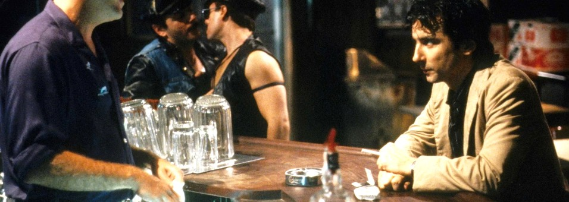

Kitchen open till close
The menu
LAST STOP
BAR AND GRILL, SOHO
To start
Bagel bites3.50
Toasted minis spread thick with chive and black pepper cream cheese, smoked salmon, capers, sesame, poppy seed and garlic.
Softer than a paperweight.
French fries1.50
Hand cut, fried twice, plenty of salt.
House chili2.25
Ground beef and kidney beans simmered all evening with cumin, ancho and tomato. Raw onion, saltines.
Sweets
Plaster of Paris cake2.50
Vanilla butter layers under thick seven-minute frosting, roughed up with a palette knife so it sets white and matte.
For the sculptors on the block.
Dipped cone1.75
Vanilla soft serve piled high, dipped in dark chocolate that sets to a shell, then crushed peanuts or sprinkles.
Better than the truck.
Behind the bar
Whiskey sour3.50
Bourbon, lemon, a little sugar and egg white shaken silky, bitters on the foam, a cherry.
Tom shakes them hard.
Draft beer1.50
Cold, in a heavy mug.
Shot and a beer2.75
Rye or bourbon with a draft back.
Coffee.90
Fresh pot all night, refills free.

The bar, a quiet night after midnight.
From behind the bar
Lock up when you leave, there have been burglaries on the block. Going on to Club Berlin? Eat first.
Tom
GUEST CHECKNo. 0150
Table 4, Julie
1 burger4.75
1 whiskey sour3.50
1 coffee.90
Total9.15
PAID
Cash only. Prices subject to change. Form 1985.